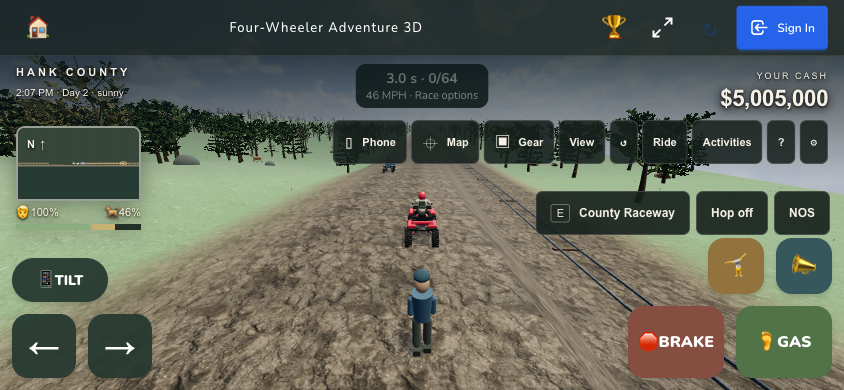
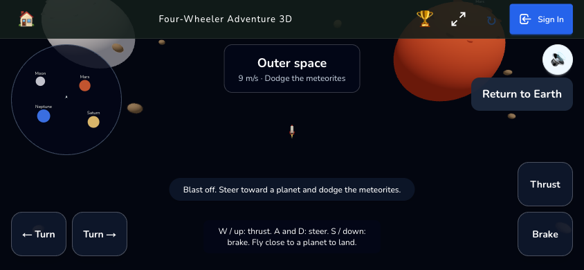
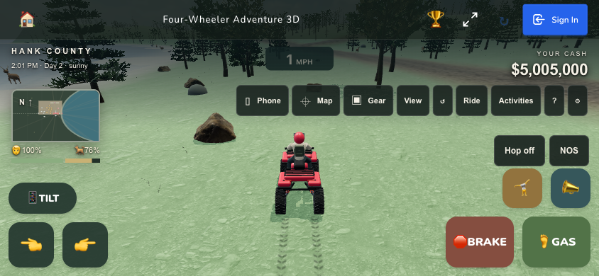
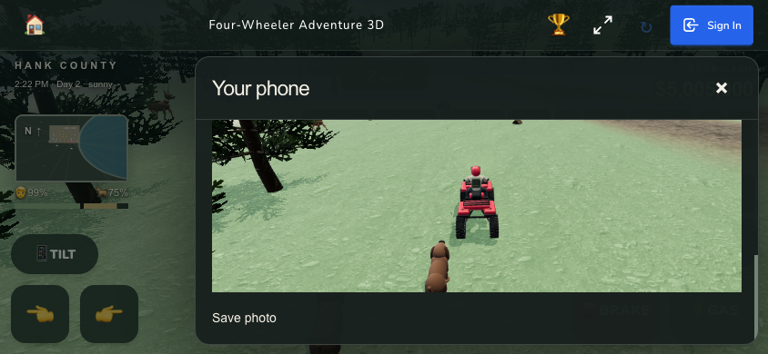
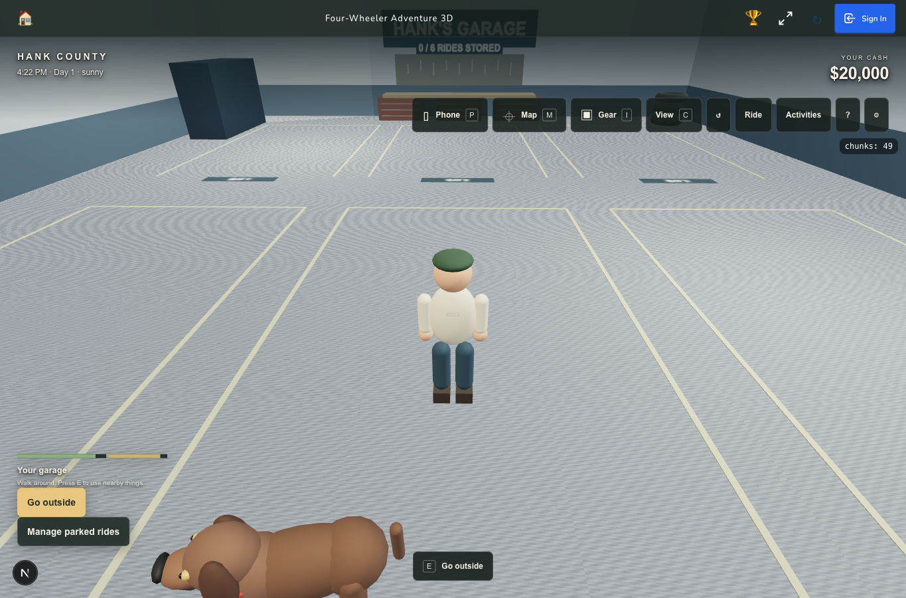
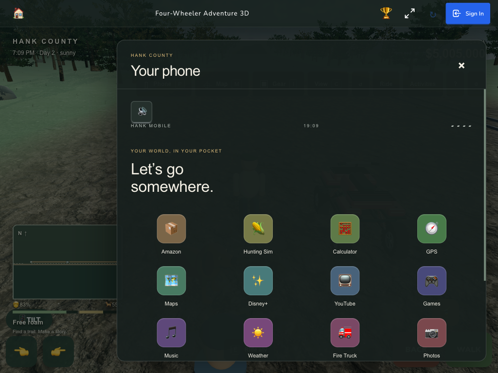
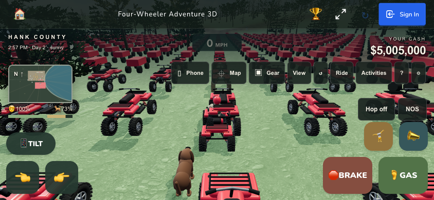

HANK COUNTY / LOCAL ACCEPTANCE
Four-Wheeler: complete adventure upgrade
Captured 2026-09-09T01:39:29.743267+00:00. Branch feat/four-wheeler-3d, draft PR21. The original 2D game is unchanged.
The code-derived inventory contains 269 rows: 192 implemented, 71 deliberate adaptations, 2 prior browser-evidenced items, 4 final acceptance items now accepted with the limits below. Every feature family is implemented; evidence distinguishes code, automated tests and actual browser journeys.
The engine
Low irregular firing pulses layered with a locally hosted CC0 engine recording. Throttle/load changes pitch and exhaust tone smoothly; mute, pause, delayed loading and cleanup are tested. Recorded idle, acceleration and coast: peak -16.2584dBFS, RMS -29.9631dBFS, no clipping. This is a browser recording, not a claim of subjective human listening.
What is included
Stable ATV driving, detailed vehicles, foot exploration, dog, GPS and world map, nine stores and delivery, twelve phone apps, hunting, fishing, racing, boats and yacht, aircraft, railway and space exploration. Home life, outfits, farms, properties, interiors, garages, trailers, mowing, snow, fire-water equipment and playground activities are connected to the world and save system.
Verification
- 1,146 tests passed across 150 files. ESLint, TypeScript and production build passed; exact logs and outcomes are listed in QA data.
- Eight independent reviewers covered logic, data, UX, testing, performance, simplicity, guardrails, maintainability, security, accessibility, error handling, frontend and pre-mortem. All confirmed introduced defects were fixed; final focused source and visual reviews passed. Review record.
- 46 local asset hashes verified, 33,808,226bytes, plus 35,726byte engine sample. No new runtime third-party media dependency.
- Real Rapier tests cover steering, banked ground, braking, jump/roll and recovery. Browser turning measurements and native two-pointer touch confirm direction. A malformed below-ground saved pose recovers automatically.
Performance and limits
| Production scenario | FPS | 95th-percentile frame |
|---|---|---|
| ATV,844×390 | 120.125 | 9.7ms |
| Same scene,4× CPU throttle | 79.455 | 26.6ms |
| 500-vehicle save | 119.901 | 9.7ms |
Three-to-four-second requestAnimationFrame samples on this 120 Hz host. Chrome touch/viewport and CPU emulation are representative checks, not physical-phone certification. The visual result is a coherent stylized 3D adventure with photographic materials. AAA fidelity, an objective 10/10 score, exhaustive manual testing of all 269 rows, multiplayer and production deployment are not claimed. Pretend-video likes/subscriptions are session state, matching the original hint-only interaction; world purchases and progress have separate persistence.
Actual journeys
Location and ownership fixtures were seeded only in disposable QA storage while the game was unmounted. Actions, movement, purchases and downloads were then performed through the actual UI. Prior development and final production evidence are labeled below.
| Journey | Result | Evidence |
|---|---|---|
| steering-stability | passed | Actual right input yaw -1.0277, min upDot .997579, max49.3236mph; left +.91637/up.999982; recovery up.999915/four wheels. |
| engine-rumble | passed | Browser recording idle/accelerate/coast /tmp/fw3d-engine-recorded.wav, peak -16.2584 dBFS, RMS -29.9631; synth+localCC0recording; async lifecycle unit tests. |
| physical-dealer | passed | Actual F250 purchase subtracts20000, adds truck with terrain-grounded pose; model preview opened. |
| phone-media | passed | Disney10titles and LionKingplayer; YouTube10channels/MrBeast10videos. Actual Like and Subscribe toggle. Reload resets pretend-media library by design; original inventory requires hints, not saved subscriptions. Game-world persistence remains separate. |
| phone-calculator | passed | Actual2+3=5. |
| phone-gps | passed | Map searches112destinations; plot1 pin selected route. Property door autoarrival radius fix awaiting final retest. |
| delivery | passed | ActualAmazonrod order debits100,38second delivery completes,inventoryrod1. Indoor home order also succeeds with exactxyz savedposition. |
| property | passed | Buyplot1 6000,garage3000,house4000,expand8000; ownedstructures/levelpersistafterreload. Entergarage y2000, correctexitprompt, Gooutside returns x858.708,z245. Parking/retrieval pending. |
| fishing | passed | Actualboatboard, Findfish route, Cast line, keyboardSpace short pulses catches1bigfish; Sellfish credits15000 and clearsbag. |
| dog-feed | passed | ActualGearFeed dog subtracts10, sendsdogtobowl. |
| home-meal | passed | Eat100 resets hunger, entershome; indoorAmazon order succeeds. Eexit ultimately correctposition; immediatepause race underfix. |
| starvation | passed | 24gamehour timeout resetscash20000/fleet while preservingplot1 buildings/expansion. |
| phone-photo | passed | Takephoto and Savephoto actualPNGdownload /tmp/fw3d-qa-phone-camera.png succeeds. Exposedgaragecanopyobstruction colliderfix needsretake. Final production retake/download passed. |
| mobile-layout | passed | 844x390desktopviewport nohorizontaloverflow apparent /tmp/fw3d-qa-mobile-landscape.png. RealhasTouchcontext pending. Final native touch multi-pointer, portrait continuation and tablet phone checks passed. |
| console | passed | TemporaryQAcontext monitored windowerror+console.error, zero observed throughabovejourneys. DevelopmentHMR reloads occurduringedits. |
| production-touch-driving | passed | Native two simultaneous touch pointers on Gas and Steer right: 23 MPH; heading from .001252 to -1.900712. No errors. |
| production-atv-parachute | passed | Actual Open ATV parachute button: parked quad, parachute-open hint, glide controls. |
| production-space | passed | Launch pad Use, Blast off, real keyboard steering and thrust, Mars landing, movement to gem, +$5,000, Board rocket, Return to Earth. Saved Mars visited and mars-gem-3, balance $5,005,000. |
| production-train | passed | Use boards train. Stations chooses West, NOS reaches77m/s, sky railway63m/s, Hop off triggers automatic return. Zero errors. |
| production-horse | passed | Seeded owned saddled horse, actual Gear Ride a horse, forward movement, E dismount. |
| production-milking | passed | Actual Gear Milk a cow and ten-second wait: Red bucket20% full,1/5 milkings. |
| production-hunting-controls | passed | Actual Gear Raise scope, keyboard arrow moves aim, Enter fires, Lower scope exit. This observation does not assert a successful animal hit; ray hits/retrieval/rewards covered in focused tests. |
| production-race | passed | Actual Start race, countdown, throttle20MPH, elapsed/checkpoint HUD. Exposed remote options and narrow layout gaps, now fixed with rendered regression; final retest recorded separately. |
| production-camera | passed | Actual Photos Take photo and Save photo downloaded hank-county.png with real world image; no canvas/CSP errors. |
| production-layout | passed | 390x844 portrait prompt, Continue anyway, Phone;1024x768 tablet Phone; no horizontal overflow or console errors. |
| production-performance | passed | 844x390, native120Hz host: normal ATV120.125FPS/p95 9.7ms;4xCPU throttle79.455FPS/p95 26.6ms. 500-vehicle save119.901FPS/p95 9.7ms/max16.5ms. 3-4s stationary samples, Chrome emulation not physical phones. |
| final-race-options | passed | Production: start/countdown, actual throttle47MPH, Race options opens away from start, End race clears run. Card rect y64..108, toolbar y120..164; compact speedo hidden, both ←/→ labels correct. Zero errors. |
| final-space-layout | passed | Production space heading y77 below app header, return button works. Screenshot retained. |
| below-ground-recovery | passed | Deliberately seeded invalid ground height y2.1 at raceway ground8.614. Without pressing R, resumed aboveground, started race and drove47MPH. Later persisted rider x27.897,y8.0308,z1981.142. Recovery clears fall airtime. |
Visual evidence
{kind=link}

{kind=link}

{kind=link}

{kind=link}

{kind=link}

{kind=link}

{kind=link}

Provenance and handoff
SHA256 of final reviewed source identifies the code behind this report. Earlier plan and feature-audit line references remain historical snapshots and may have moved during formatting. This report supersedes their pending verification labels.
Full plan · Original feature reconciliation · Completed worklist
Repository pre-commit secret scan and pre-push frozen-install/lint/typecheck/test/build hooks remain enabled. Changes are for draft review; no production merge or deployment is included.